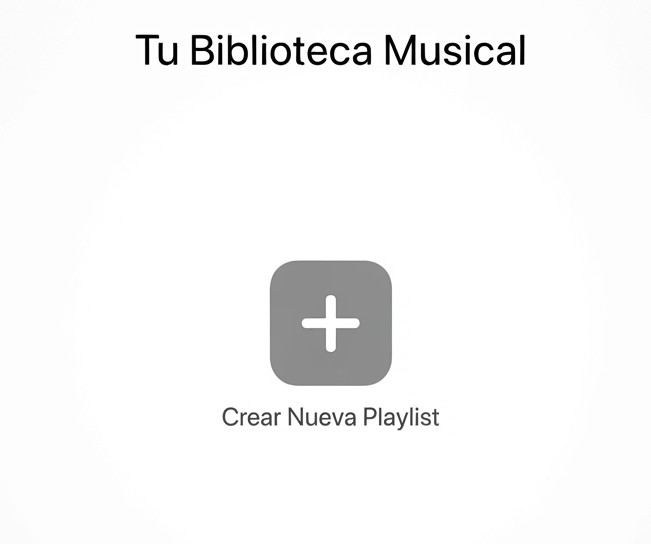

Álbumes Recientes
Últimos lanzamientos y discos agregados recientemente a tu colección personal.
Explora tu música guardada, álbumes recientes, artistas favoritos y listas creadas por ti.

Últimos lanzamientos y discos agregados recientemente a tu colección personal.
Tus creadores y bandas favoritas organizadas alfabéticamente para un acceso rápido.
Recopilaciones personalizadas para entrenar, estudiar o relajarte en cualquier momento.